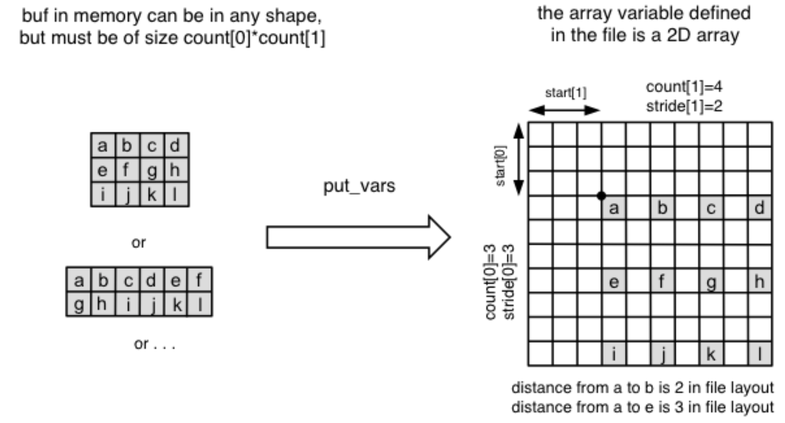

Parallel Read and Write
Warning
Under construction.
NumPy Slicing Syntax
PnetCDF-python datasets re-use the numpy slicing syntax to read and write to the file. Slice specifications are translated directly to PnetCDF “start, count, stride” selections, and are a fast and efficient way to access data in the file. The following slicing arguments are recognized:
Indices (var[1,5])
Slices (i.e. [:] or [0:10])
An empty tuple (()) to retrieve all data
Multiple indexing(e.g. var[1][5]) NOT SUPPORTED in write
The operational mode (collective/indepedent) is dependent on the current file mode status.
f.enddef() # Exit define mode var = f.variables['var'] buff = np.zeros(shape = (10, 50), dtype = "i4") f.begin_indep() # turn on indepedent mode var[:] = buff # put values to the variable using indepedent i/o print(var[:10, :10]) # read the topleft 10*10 corner from variable var # print(var[2:10,9:3]) # print(var[0]) # print(var[:10]) # print(var[1,5])
Method Call of put/get_var()
This approaches might be particularly useful in mult-processing programs.
Variable.put_var()requires data as a mandatory argument, which serves as a buffer that stores values to be written. The behavior ofVariable.put_var()varies depending on the pattern of provided optional arguments - index, start, count, stride, num and imap. The suffix _all indicates this is collective I/O in contrast to indepedent I/O (without _all). The method returns a numpy array with dimension
- Read from netCDF variables
For reading, the behavior of
Variable.get_var()depends on the following provided input parameter pattern:none - Read an entire variable
index - Read a single data value
start, count - Read an array of values
start, count, stride - Read a subsampled array of values
start, count, imap, buff - Read a mapped array of values
start, count, num - Read a list of subarrays of a netCDF variable in an opened netCDF file
where start, count and stride represent a corner, a vector of edge lengths, and a stride vector respectively. Together, they specify an (subsampled) array section to read from in a netCDF variable as illustrated in the diagramm below. By default, the method returns a multidimensional numpy array in the shape of (count[0], … count[n]).

Here’s a python example:
# Collective i/o print(var.get_var_all(start = [0, 0], count = [5, 25], stride = [2,2])) # Read an array of values # Independent i/o f.end_indep() print(var.get_var(start = [0, 0], count = [5, 25], stride = [2,2])) # Read an array of values # Equivalent to print(var[:10:2, :50:2])
- Write to netCDF variables
For writing, the behavior of
Variable.put_var()depends on the following provided input parameter pattern:data - Write an entire variable
data, index - Write a single data value (a single element)
data, start, count - Write an array of values
data, start, count, stride - Write a subsampled array of values
data, start, count, imap - Write a mapped array of values
start, count, num - Write a list of subarrays of values
where start, count and stride represent a corner, a vector of edge lengths, and a stride vector respectively. Together, they specify an (subsampled) array section to write to for a netCDF variable as illustrated in the diagramm below. Note that the buffer array (the numpy array to write) can take any shape as long as the total size is matched with count.
Here’s a python example:
# Collective i/o buff = np.zeros(shape = (5, 25), dtype = "i4") var.put_var_all(buff, start = [0, 0], count = [5, 25], stride = [2,2]) # Write an array of values # Independent i/o f.end_indep() var.put_var(buff, start = [0, 0], count = [5, 25], stride = [2,2]) # Write an array of values # Equivalent to var[:10:2, :50:2] = buff
{kind=link}